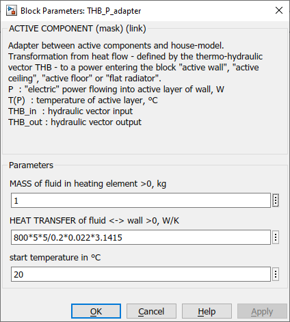

THB_P_adapter
Path: CARNOT/Source/Heat_Exchanger
Purpose:
Connect active components to the house-model, i.e. to model a floor heating.
Description:
The model consists of a fluid mass, heated (or cooled) by the incoming flow.
The power is than transferred with the heat transfer coefficient and the
temperature difference to the heating power for a wall or floor. The heat
transfer can be given by a calculation model:
HEATTRANSFER = Heattransfer_Coefficient *
Room_Length * Room_Width / Pipe_Laying_Distance * Pipe_Diameter * pi
In the figure of the parameter window, the heat transfer is set to the value
HEATTRANSFER = (800 W/m2) * (5 m) * (5 m)
/ (0.2 m) * (0.022 m) * 3.1415
Input:
| T[P] | : | temperature of the active layer in °C, given by the wall of floor model |
| THBin | : | Thermo-Hydraulic Bus of the inlet (flow line) |
Output:
| power | : | thermal power in W given to the active layer |
| THB | : | Thermo-Hydraulic Bus of the outlet (return line) |
Parameters and Dialog Box:

Examples:
Open the example explorer from the Matlab command window
ExampleBrowser
or load the examples via the CARNOT library.
Literature:
Dott_Validitaet_FBH_TABS_Modell_CarnotUserTreff_2014
Characteristics:
| Direct Feedthrough | : | Yes |
| Sample Time | : | Inherited from driving block |
| Vectorized | : | No |